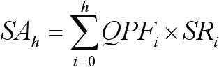
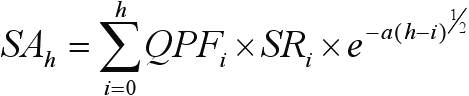
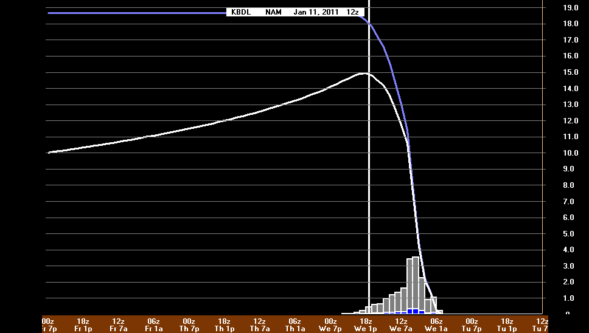
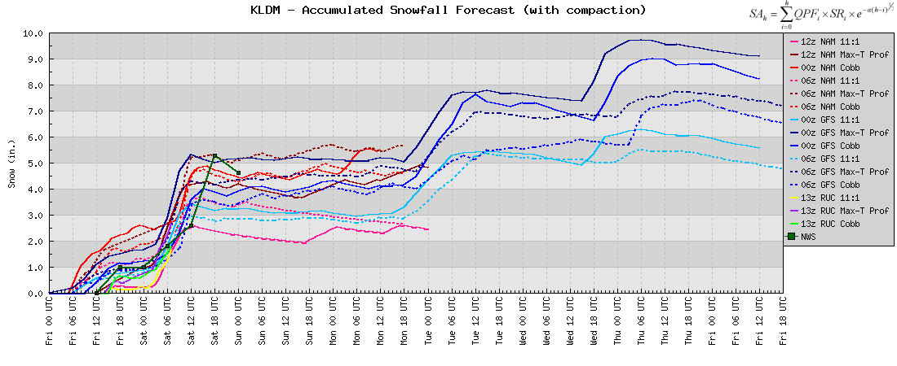
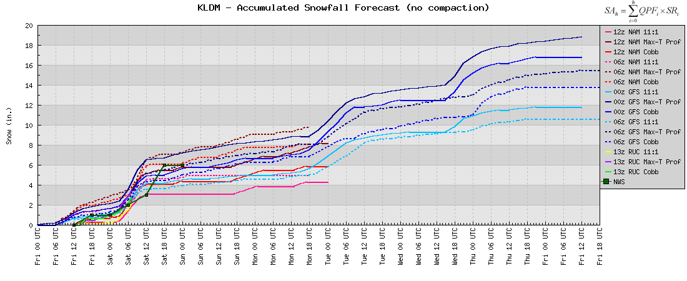

|
What is Compaction? In a nutshell, "Compaction" is essentially a way to account for snow compacting into a thinner layer on the ground the longer it sits there. The method was developed by Ed Mahoney and the WFO Buffalo based on years of snow compression studies (empirically based). Note: The information contained on this page are paraphrased discussions with Ed through personal correspondence. The graphics and equations belong to him. Many thanks to Ed for sharing pieces of his code and for his guidance to make this a part of the Meteograms! Accounting for compaction is important because measurements of snowfall (reported once per day) differ greatly from measurements of liquid precipitation (reported hourly). If instead, liquid measurements were reported every 24-hours, the amount of difference resulting from the two reporting intervals would likely be negligible (with the exception for evaporation). Applying this method to snow, on the other hand, will result in big differences. The longer the snow sits on the ground, the more time it has to compact into a thinner layer. Additionally, the more snow that falls, the more compaction that will result. If snowfall were measured hourly, accounting for compaction may or may not be necessary. However, given that snow has time to compact before it's measured, it is highly recommended to use this method when forecasting snowfall. Further information (provided by Ed): National Weather Service regulations require observers not to measure accumulation more than 4 times a day. However, if you simply add up hourly snowfall model output, you are essentially taking 24 snow measurements a day and then adding them together. This erroneous process results in greatly overestimated snow accumulation values. If you like additional information you should see the snow measurement guidelines here, where it specifically addressed this issue: "...make sure that you clear your snowboard (or other measuring surface) no more than once every 6 hours. your report. Never sum more than four, six-hourly observations to determine your 24-hour snowfall total. If you use more than four observations, it would falsely increase snowfall totals." So, how does the method work? First, let's step back a minute and formulate an expression for summing all of the projected snowfall for a given forecast period:
 , where QPF is the amount of liquid precipitation (in the form of snow) predicted by a given model, and SR is the snow ratio used (more on these later). The result of this expression is visualized on the chart below (blue line). Now, "Compaction" is simply an additional term that is included in the equation above:
 , where a = -0.08, h = total # of forecast hours, and i = the current forecast hour in the iteration. The result of this expression is also visualized on the chart below (white line). As you can see, the amount of snow on the ground decreases at a slow exponential rate well after the snow has stopped falling (i.e., the effect of compaction).
 Accounting for the effect of compaction can significantly reduce the amount of projected snowfall for a given event (as illustrated above). This is a good reason why forecasters should account for this effect! Getting back to QPF and SR, Bufkit includes several options for adjusting the snow ratio. Among these include "Max Temp In Profile", "Zone Omega", "Sfc Temp", and a "User-Defined Constant Value". Documentation on these algorithms may be found on the "Training" button within Bufkit. You'll notice that the meteograms for snow accumulation now include two of these options (Max-T in Prof and Constant Value) for the latest 2 runs of the NAM & GFS, the latest RUC, and the latest NWS point forecast (via NDFD).
  Additionally, I've given the user the options to a adjust the "Constant SR value" on the fly (default is 11:1), and to plot the snow accumulation with or without compaction (as illustrated above - see the difference!). |